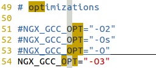
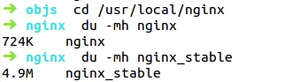
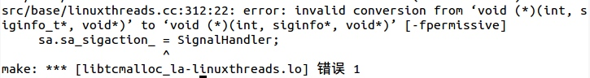
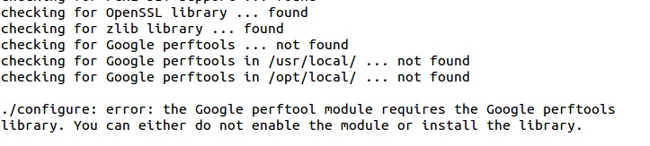
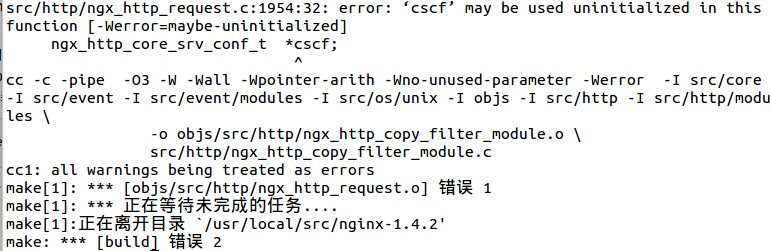
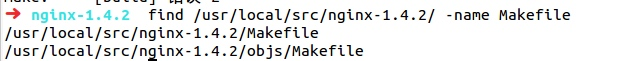
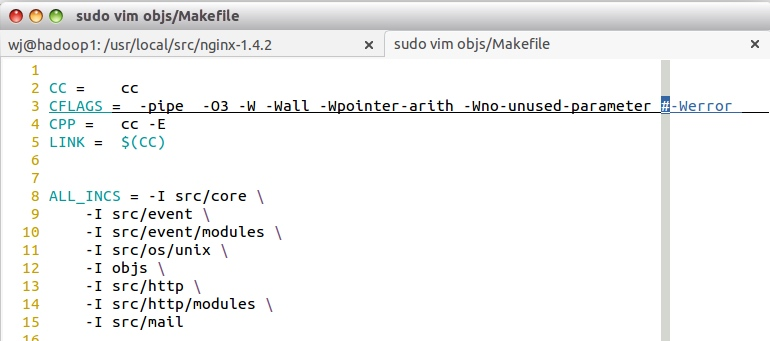
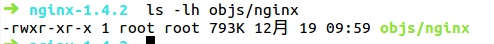

nginx性能优化技巧
前几天买了本高俊峰的《高性能Linux服务器构建实战I》,网上都说运维必备手册,昨天看了目录加小50页感觉还是比较扩充视野的,很多东西在学校是不可能学到的,就是感觉有的地方讲的仍然不是很清楚,毕竟79块的书其实可以写到800页的....
个人对于nginx比较感兴趣,源码的编译安装是比较熟的了,配置文件本来以为挺熟的,但是看了书上配置文件的N多命令我感觉根本玩不起来.因为实在是太多了,要背根本不现实,就算背下来不去用也会很快就忘掉.十分蛋疼~~
书上对于Nginx的性能优化写了4种方法,下面分别讲一下:
1.编译安装过程的优化
在编译nginx时，默认以debug模式进行，而在debug模式下会插入很多跟踪和ASSERT之类的信息，编译完成后，一个Nginx可执行文件会有好几兆大小，而在编译前取消Nginx的debug模式，编译完成后只有几百K，因此可以在编译之前取消debug模式。具体步骤：
①进入源码目录，修改配置文件
cd /usr/local/src/nginx-1.4.2/auto/cc sudo vim gcc
②找到gcc 文件中的debug，把debug和下面一行注释掉
③为特定CPU指定CPU类型编译优化，找到NGX_GCC_OPT，添加-O3

④然后重新编译，可以看到生成的Nginx二进制文件明显变小了

2、TCMalloc优化Nginx性能
TCMalloc是谷歌开发的开源工具google-perftools中的一个成员，与glibc库的malloc相比，TCMalloc库在内存分配效率和速度上高很多，这在很大程度上提高了服务器的高并发性能，从而降低系统负载。
安装google-preftools前需要安装libunwind库，下面是具体步骤：
①安装libunwind库
tar xzvf libunwind-1.1.tar.gz cd libunwind-1.1 CFLAGS=-fPIC ./condifure sudo make CFLAGS=-fPIC sudo make CFLAGS=-fPIC install
②安装google-preftools
前面说过，TCMalloc是google-perftools中的一个成员，所以在编译安装google-preftools时不需要全部编译安装,而且选择把google-preftools的全部组件装上会有问题报错如下：

正常的编译后报了这个错误，网上找解决方法有说是glibc库版本不兼容，还有说是google-perftools与libunwind版本不兼容，反正网上的解决方法很少而且大多数是要FQ的。后来一想既然只要装TCMalloc那就把其他的都禁掉被
./configure --prefix=/usr/local/gperftools --disable-cpu-profiler --disable-heap-profiler --disable-heap-checker --enable-frame-pointers --disable-dependency-tracking sudo make && sudo make install
③重新编译nginx
cd /use/loca/src/nginx-1.4.2 sudo ./configure --sbin-path=/usr/local/nginx/nginx --conf-path=/usr/local/nginx/nginx.conf --pid-path=/usr/local/nginx/nginx.pid --prefix=/usr/local/nginx --with-http_ssl_module --add-module=/home/wj/nginx/ngx_http_echo_module --add-module=/home/wj/nginx/ngx_http_hello_world_module --add-module=/home/wj/nginx/ngx_http_test_module --with-http_stub_status_module --with-google_perftools_module
编译结束，报错：

他说是我google-perftools的库路径认不出来，网上找资料答案千篇一律，无非是google-perftools库没有导入系统，还有nginx-1.4.2/auto/lib/google-perftools/conf文件里面写的默认目录是/usr/local，所以需要加上echo “/usr/local/gperftools” >> /etc/ld.so.conf.d/usr_local_lib.conf 然后把conf文件里的/usr/local路径全部改成自己google-perftools指定的路径，我都照做了但是仍然报同样的错，我只能放弃源码安装这个方法，前面从google-perftools开始的所有步骤都作废，从libunwind源码安装结束后直接改用apt-get安装:sudo apt-get install libgoogle-perftools-dev
重复上面的configure步骤，不出意外会遇到这个报错：

释放出来的源码会有错？这不大可能，再看下面的提示写着所有的警告会被当成错误，所以编译失败，然后一想前面的debug被我给注释掉了，后来我把debug的注释去掉是可以编译的，但是我们的目的是优化nginx，肯定不能这么做，然后我想到了Makefile，使用find /usr/local/src/nginx-1.4.2 -name Makefile查找nginx源码目录下的makefile文件

分别打开这两个文件，可以发现在第二个文件中有个-Werror选项，这就是导致错误的原因，把他注释掉

改完这个直接make不需要再configure，这是个坑，我试了一个上午才试出来，如果改完此文件再configure这个文件你注释的那一段就没了也就是说-Werror选项又回来了。。
好了前面有点乱我们来梳理一下整个过程：
源码安装libunwind-->apt-get 安装google-perftools-->进入nginx源码目录configure生成新的配置文件-->修改makefile-->make
make完毕直接去objs/下取nginx二进制文件即可

④创建线程目录，修改主配置文件
mkdir /tmp/tcmalloc chmod 777 /tmp/tcmalloc
3、Nginx内核参数优化
这一部分我不打算写了，因为内核参数实在太多，根本背不完，所以还是不写了。